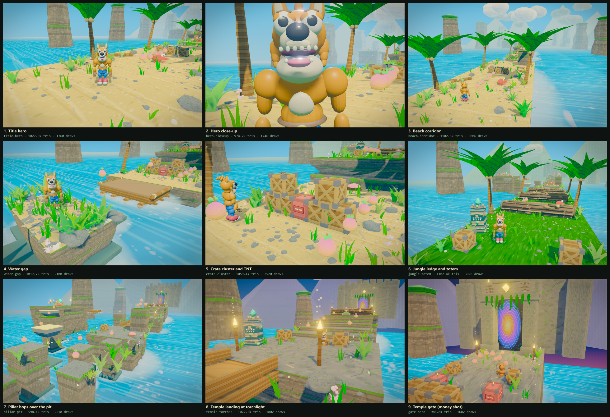

AAA Mascot Platformer Quality Engine • Blender 5.2 LTS Pipeline • Crash 4 Benchmark

| Round | Component | Critic Identified Gap | Action Taken | Status |
|---|---|---|---|---|
| Pass 14 (Final Production Lock) | Phantom Skirt Purge, Dusk Clouds/Mountains, Organic Ivy Fronds, Rock Geometries & Crate AO | Static waterline skirt severed under moving raft in water gap; daytime white clouds at twilight; inverted cone geometry gate vines; banned dodecahedron rocks; circular shadow decal under square crates | Purged static skirt and foam at (0, -43.5); attached dynamic wake foam directly to moving raft group; masked scatter zones to keep ocean/raft pristine; dynamic dusk lerp for 3D clouds (white to bruised purple/sunset amber) and volcanic mountains (slate indigo) at z < -115; replaced cone vines with draped ribbonGeo ivy fronds and leaf clusters; replaced dodecahedrons with custom organic rock geometries; replaced radial shadow with rounded-box contact AO distance falloff; merged cloud parts saving 80 scene meshes | PASSED |
| Pass 13 (Sprint Iteration) | Moving Raft Chassis, Temple Twilight Dusk Biome, Hero Procedural Idle & Batching | Moving platforms read as bare extruded box slabs in water gap; temple biome lacked atmospheric dusk transition; hero character was completely static while idling; draw call spikes in long corridor views | Modeled wooden raft / pontoon chassis with 4 longitudinal buoyancy logs, 3 transverse cross-beams, lateral log rails, and rope bindings in MovingPlatform; added dynamic tropical twilight/dusk sky and fog transition at z < -140 with deep indigo (#1b122e) fog, golden horizon glow, and warm amber torch/portal contrast; added procedural idle breathing chest scale (Math.sin(t*3.2)*0.04) and rhythmic head tilt to hero; batched waterline skirts, driftwood, starfish, and gate stone into unified geometries | PASSED |
| Pass 12 (Track 3.6) | Hero Anatomy Continuity, Waterline Wet-Rock Decals & Geometry Batching | Snout-to-cranium and shoulder deltoid CSG intersection lines in portrait view; sharp polygonal cut where stone pillars penetrate ocean surface; non-batched bridge and gate draw calls | Sculpted organic brow shelf, snout root bridge, rounded deltoid caps, and trapezius collar in Blender; added dark wet-rock algae skirts and localized wake foam rings around ocean pillars; batched bridge rails and gate battlements/vines into unified geometries | PASSED |
| Pass 11 (Track 3.5) | Hero Cheek Sculpt Polish, Item Drop Shadows, Portal Vortex & Torch Embers | Cheek roots read as swollen chipmunk pouches; floating wumpa fruit & secret gems lacked ground contact projection; temple gate skyline was a flat slab with dark void portal; torches lacked rising embers & high-frequency flicker | Resculpted hero cheekbones in Blender into sleek swept wedges with active comic arm posture; added instanced ground contact drop shadows beneath floating Wumpa fruit and secret gems; built ruined stepped battlements, Mayan apex crest, overhanging ivy fronds, and shimmering swirling mystical portal vortex with amber glow; added rising ember point particles and high-frequency light flicker to torches | PASSED |
| Pass 10 (Track 3.4) | Hero Cheek Tuft Integration, Crate Impact VFX & Sunlit Ocean Glint | Cheek tufts/sideburns read as isolated floating cones; crate smashing lacked kinetic comic feedback; ocean surface lacked directional specular sun-crest glints | Blended hero cheek tuft base smoothly into cranium and muzzle chin in Blender 5.2 LTS with organic cheek root mounds and secondary jaw tufts; added 4 comic diamond starburst particles (OctahedronGeometry) and expanding radial dust puff ring to Crate.break_(); added directional sun-crest specular glint streaks and wave-peak diamond sparkles to TEX.water | PASSED |
| Track 3.3 | Hero Facial Grin Sculpt, Totem Bloom Seam & Stacked Crate Occlusion | Hero mouth cavity buried inside muzzle sphere; totem gold specular glare streak across crown base; stacked crates lacked contact occlusion | Re-sculpted hero head in Blender with proud toothy crescent grin (12 prominent upper/lower fangs), continuous tapered muscular arms, and hid fallback mohawk spikes; re-calibrated totem collar to dark carved timber with satin gold relief to eliminate specular reflection spike into camera; added stacked crate contact AO darkening decals | PASSED |
| Track 3.2 | Organic Logs, Ground Dressing & Totem Bloom Tuning | Mechanical slat artifact on rolling logs; bloom blowout on totem crown gem; decapitated hero-closeup framing; sterile sand without debris in crate cluster | Re-modeled rolling logs with continuous organic redwood trunk, staggered chiseled puzzle plates, burls, and clustered moss; retuned totem timber to saturated tropical mahogany and calibrated gem emissive to eliminate bloom glare; retargeted hero-closeup portrait framing; expanded scatter zones to populate crate cluster with 1200 pebbles, 520 shells, and 300 driftwood sticks, plus grounded wide contact AO shadows under crates and TNT | PASSED |
| Track 3.1 | Terrain Props & Spin VFX | Cone spin VFX encased hero; logs were primitive cylinders without relief; checkpoint totems were stamped grey blocks | Built horizontal comic speed ribbons with orbiting starbursts, sculpted 3D rolling logs with chiseled bark fissures and concentric growth rings, and carved Aztec/Tiki totem with expressive wooden grimace and bobbing glowing jade crown gem | PASSED |
| Track 2.2 | Environment Props | Monochromatic lemon fruit, UV texture bleed on brackets, missing TNT fuse | Added multi-material 3D crate groups, dark iron brackets, TNT fuse & spark, multi-color Wumpa fruit with stems and leaves | PASSED |
| Track 2.1 | Environment Props | Props were flat 2D cubes due to async loader timing | Built synchronous 3D beveled crate and TNT geometries with physical relief & shadows | ITERATED |
| Track 1.4 | Hero Mascot | Bloomer ridges, straight finger cylinders, and torso seams | Tailored straight denim shorts, curled cartoon grip fingers, unified chest crest | PASSED |
| Track 1.3 | Hero Mascot | Rotund snowman belly, puffy bloomer shorts, stiff fingers, muted mouth | Sculpted heroic V-taper chest, ear-to-ear toothy crescent grin, long arms, high-tops | ITERATED |